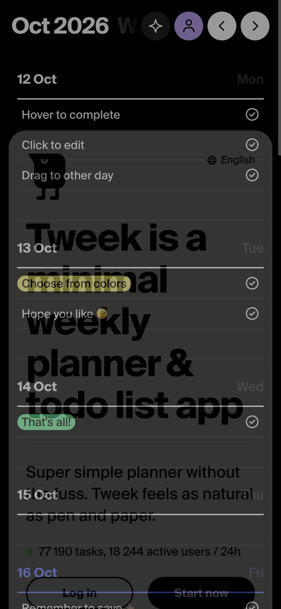
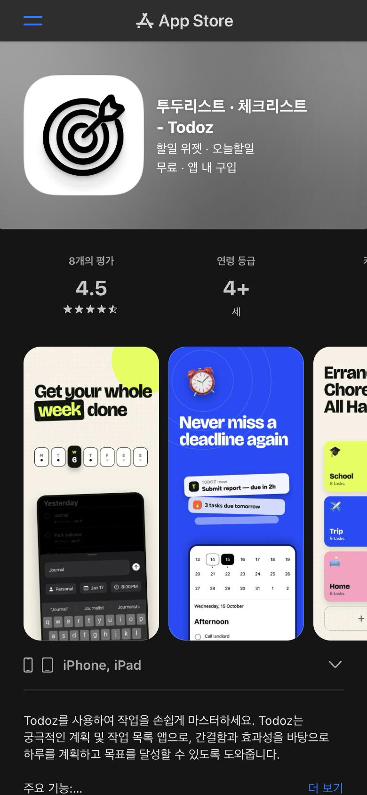

하루한장
"종이처럼 단순한 플래너"(Tweek)와 "아침·오후·저녁으로 나누는 투두"(Todoz, Planly)는 각각 있지만, 하루 한 장만 보여주고 · 시간대 칸에 적고 · 그은 줄을 기록으로 남기는 셋을 한 화면에 묶은 서비스는 찾지 못했다.
우리의 자리
폰에서 여는 하루 한 장의 종이 노트 — 시간대 4칸에 바로 적고, 펜으로 긋고, 그은 줄이 기록으로 남는 투두.
- 빈틈 · 기회
- 시간대 투두는 입력할 때 고를 게 많아지고, 종이 감성 앱은 주간 보기거나 iPad 펜 전용이라 "폰에서 하루 한 장"을 가볍게 쓰는 자리가 비어 있다. 끝낸 일을 줄 그어 남기는 기록과 매일 열 이유(명언)를 앞세운 곳도 찾지 못했다.
- 차별 포인트
- ① 하루 한 장 + 4칸만(날짜·시간·폴더 선택 없음) ② 줄 긋기 기록과 오늘의 명언으로 '다시 열고 싶은 종이'
경쟁·참고 서비스
| 서비스 | 한 줄 포지셔닝 | 타깃 | 가격 |
|---|---|---|---|
| Tweek | "minimal weekly planner & todo list app" — 펜과 종이처럼 자연스러운 주간 플래너. 못 한 일은 내일로 자동으로 넘김 | 복잡한 플래너가 싫은 개인·소규모 공유 사용자 | 무료 + Premium(노트·캘린더 연동 등). Premium 가격은 공식 페이지에서 확인 못 함 — 별도 확인 필요 |
| Todoz | 할 일을 아침·오후·저녁 세션으로 나누는 iOS 투두·플래너 | iPhone·iPad 사용자 | 무료, 앱 내 구입(Todoz Pro) US$0.99~19.99 |
| Planly | 할 일을 아침·오후·저녁 시간 블록으로 나누는 작은 iPhone 앱 | iPhone 사용자 | 무료 |
| Handy | 손글씨로 적는 iPad 투두 플래너. 3일 전까지의 못 한 일을 불러올 수 있음 | iPad·Apple Pencil 사용자 | 무료 |
| 서비스 | 왜 참고하는가 | 겹치는 지점 |
|---|---|---|
| Things 3 | 정교한 할 일 앱인데도 Today 목록 아래 "This Evening" 칸을 따로 둠 — 시간대를 대충 나누는 것이 기능이 많은 앱에서도 쓰이는 방식이라는 근거 | 오늘 목록, 저녁 칸 |
| 종이 플래너 · 태블릿 데일리 템플릿(Goodnotes 등) | 사용자가 지금 대신 쓰는 것. 하루 한 장 레이아웃과 손글씨의 손맛 | 하루 한 장, 줄 긋기, 지난 장 넘겨보기 |
| Done. – 미니멀 투두 & 데일리 플랜 | 완료한 일을 지우지 않고 보관해 다시 볼 수 있다는 설명 — "기록 남기기"를 내세운 미니멀 투두 | 오늘/어제/내일 단위, 완료 기록 보존 |
Done.의 내용은 검색 결과에 나온 App Store 설명 요약 기준이다. 공식 페이지가 열리지 않아(404) 직접 확인하지 못했다 — 별도 확인 필요.
핵심 경쟁 화면
핵심 경쟁으로 Tweek(종이 같은 단순함 + 못 한 일 넘기기 — 분위기와 "내일로 보내기"가 가장 닮음)와 Todoz(아침·오후·저녁 칸 — 4칸 구조가 가장 닮음)를 골랐다.

랜딩 카드 뒤에 실제 주간 화면(날짜별 줄 목록)이 깔려 있고, 예시 할 일이 "Hover to complete / Click to edit / Drag to other day"로 사용법을 바로 알려준다. 390폭에서는 랜딩 카드가 반투명하게 뒤 화면과 겹쳐 보였다(두 번 찍어도 같음, 375폭에서는 깔끔). 큰 굵은 산세리프 헤드라인, 흑백 위주에 할 일 색 라벨만 포인트
tweek.so · 2026-10-16

홍보 이미지 카피가 "Get your whole week done", "Never miss a deadline again" — 마감·생산성을 내세운다. 입력 화면에 폴더(Personal)·날짜(Jan 17)·시간(8:00PM) 선택 칩이 함께 보여 할 일 하나에 고를 것이 많다. 캘린더 아래 "Afternoon" 구역이 보인다
apps.apple.com · 2026-10-16
Todoz는 웹이 없는 iOS 앱이라 App Store 페이지를 메인 화면으로 캡처했다. 캡처 방법: Claude 앱의 브라우저 패널(390×844 뷰포트)에서 찍어 저장. 헤드리스 크롬 캡처는 모바일 화면을 제대로 흉내 내지 못해 오른쪽이 잘려서 쓰지 않았다.
핵심 기능 비교
하루한장의 핵심 기능 기준.
| 기능/측면 | 하루한장 (우리) | Tweek | Todoz | Planly | Handy |
|---|---|---|---|---|---|
| 기본 보기 | 오늘 한 장만 | 주간(월·일 보기도 있음) | 일·주 캘린더 | — | 다이어리(하루 단위) |
| 시간대 칸 | 새벽·오전·오후·밤 4칸 | 없음(날짜별 목록) | 아침·오후·저녁 | 아침·오후·저녁 | 없음 |
| 입력할 때 고를 것 | 없음(칸 누르고 바로 적기) | — | 폴더·날짜·시간 칩이 함께 보임(캡처) | — | 없음(손글씨) |
| 완료 표현 | 펜으로 긋듯 줄 긋기, 기록으로 남김 | 체크 아이콘(캡처) | 스와이프로 완료/삭제 | — | 완료 버튼 → 맨 아래로 이동 |
| 못 한 일 넘기기 | "내일로 보내기"로 내일 같은 칸에 | 다음 날로 자동 이동 | 날짜·카테고리 사이 이동 | 설명 없음 | 3일 전까지 불러오기 |
| 매일 여는 이유 | 오늘의 명언 | — | 위젯 | — | — |
| 지난 기록 보기 | 지난 장 넘겨보기 | 주 이동 | 캘린더 | — | — |
| 플랫폼 | 반응형 웹(모바일 우선) | 웹·iOS·Android·Mac | iPhone·iPad | iPhone | iPad |
"—"는 공식 페이지에서 확인하지 못한 항목이다.
잘하는 점 · 아쉬운 점
Tweek
- 잘하는 점
- "펜과 종이처럼"이라는 한 문장으로 정체성이 또렷하고, 랜딩에서 바로 실제 화면을 써보게 한다. 못 한 일 자동 넘기기가 기본.
- 아쉬운 점
- (우리 기준) 기준이 '주'라서 하루에 집중하는 느낌은 약하고, 하루 안의 시간대 구분이 없다. 종이 '느낌'을 말하지만 화면은 깔끔한 디지털 목록에 가깝다.
Todoz
- 잘하는 점
- 아침·오후·저녁 세션으로 하루를 나누는 구조, 위젯으로 열 이유를 만든다.
- 아쉬운 점
- 폴더·날짜·시간·마감 알림까지 더해져 결국 "기능 많은 플래너"가 된다. 평가 8개로 아직 작은 앱.
Planly
- 잘하는 점
- 아침·오후·저녁 블록 하나에 집중한 단순함.
- 아쉬운 점
- 학생 프로그램(2024 Swift Accelerator)에서 만든 작은 앱으로 평가가 없고, 넘기기·기록 기능 설명이 없다.
Handy
- 잘하는 점
- 진짜 손글씨로 적는 손맛, 못 한 일 불러오기.
- 아쉬운 점
- iPad + 펜 전용이라 폰에서 틈틈이 쓰기 어렵고, 평가 1개(3.0)로 리뷰에서 월간 보기가 없다는 불만.
Things 3
- 잘하는 점
- Today 아래 This Evening 칸처럼 시간대를 '대충' 나누는 방식이 검증돼 있다.
- 아쉬운 점
- (우리 기준) 프로젝트·날짜·마감까지 갖춘 본격 관리 도구라 우리 타깃에겐 무겁다.